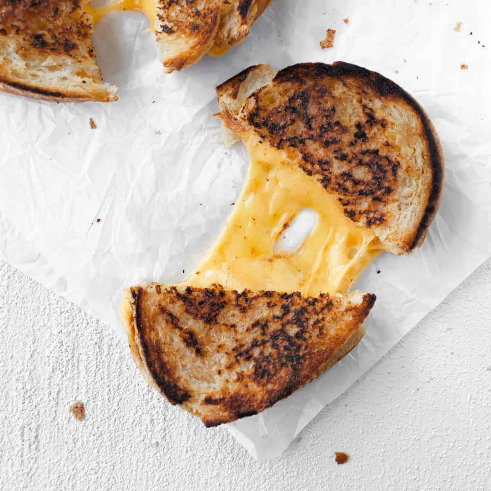

Grilled Cheese

Ingredients
- 4 slices white bread
- 2 tablespoons unsalted butter, softened
- 4 slices American cheese
Steps
- Preheat a non-stick skillet or griddle over medium heat.
- Butter one side of each slice of bread.
- Place two slices of bread, butter side down, on the skillet or griddle.
- Add two slices of American cheese on top of each slice of bread.
- Top the cheese with the remaining slices of bread, butter side up.
- Cook for about 3 to 4 minutes, or until the bottom bread slice is golden brown and the cheese has melted.
- Carefully flip the sandwiches and cook for an additional 2 to 3 minutes on the other side until golden brown.